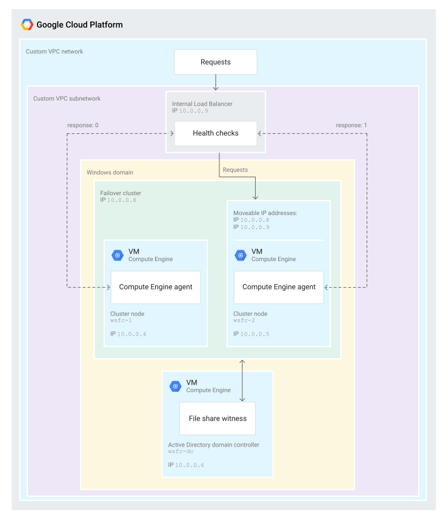

手把手介紹如何在 Google Platform 上面建立 Windows Server 容錯移轉叢集並達到IIS Web Application HA 的效果。此篇為上集從 GCP 新增資源到 AD 服務建置並加入 AD 內做管理。
本篇架構參考 Google 官方文件的 Running Windows Server Failover Clustering。主要針對整體操作完整的手把手教學並針對細節描述。而針對讀者在閱讀上更能融入整體教學，稍微調整了原文的順序。
開始前，我們先稍微看一下整體架構的目標與嘗試解決的問題。
Architecture High Level Overview

-主要服務主機(primary instance)，放置於 Google Compute Engine 中，運行 Windows Server 2016 與相關服務.
-備援主機(second instance), 配置同於主要主機.
-一組 AD domain name 主機 (DNS). 用於:
- 提供 Windows domain.
- 解決 hostnames 與 IP 配對.
- 在叢集內用來決定誰是當前的主要服務主機與備援主機. 相關內容請參考[required quorum for the cluster](https://technet.microsoft.com/en-us/library/jj612870.aspx)
整體架構網路路由
當整個叢集進行容錯移轉時，當前的網路請求(requests)會被派送至最新的啟用端點(active node)。一般來說叢集技術會透過address resolution protocol (ARP) 處理路由，處理 IP 與 MAC addresses 配對。在 GCP 服務中，Virtual Private Cloud (VPC) 支援軟體來定義網路(software-defined networking)的相關功能，所以在此我們不用提供實際的 MAC addresses 就可以達到叢集進行容錯移轉的功能。這也意味者，我們需要透過一個軟體服務來幫我們建立內部的負載平衡器來讓當前的路由運作。
通常來說，一般內網的負載平衡器負責分擔並分散來自於同一 VPC 內的大量後端主機的網絡流量，而對於叢集容錯移轉來說，我們會將全部流入該內部負載平衡器進入端口(incoming)的流量轉至當前啟用的容錯節點(active cluster node)，而如何判斷當下節點可以作為啟用的容錯節點則依據下方規則:
- 每個 VM 當作一個運行中的 Compute Engine VM 為 Windows 提供叢集容錯移轉支援。會有代理持續追蹤相關的 IP 位址。
- 負載平衡器的前端(frontend)提供 IP 作為程序應用的進入端點。
- 負載平衡器的後端(backend) 負責所有主機的健康狀態檢查。通過特定端口定期在每個群集節點上由 ping 進行回應確認。默認開放的端口(port)是59998。
- 運行狀況檢查包括應用程序的 IP 是否能作為請求中的有效內容。
- 代理將請求中的 IP 與主機 VM 內 IP 列表進行比較。如果代理找到匹配的項目，則它的值為 1 否則，就以 0 作為回應。
- 負載平衡器將任何通過運行狀況檢查的虛擬機標記為健康狀態。這邊需要注意的是，只能一台虛擬機通過運行狀況檢查，因為一次只能有一台虛擬機具有工作負載的IP地址。
如何進行容錯轉移(failover)
當叢集需要進行容錯轉移時，會有下面的處理步驟:
- Windows failover clustering 更改當前運行中的節點識別狀態從 active 至 failed
- Failover clustering 服務將當前 failing node 上的角色與功能轉換給最適合承接的節點繼續工作，這個判斷是由法定人數判斷(defined by the quorum). 而此轉移也包含了 負載平衡上後端 IP 與當前運行的主機 VM 的指派轉換.
- 當轉移完成, 原先運行的節點健康狀態會從 1 改為 0。而最新接手啟用的節點健康裝況會從 0 改為 1，由此表示接手完成。
- 而內部的負載平衡器也會將流量轉至當前運作的節點中繼續運作。
將上述概念整合
當了解上面的概念後，可以回顧一下此架構的一些特點:
- The Compute Engine agent for the VM named wsfc-2 is responding to the health check with the value 1, indicating it is the active cluster node. For wsfc-1, the response is 0.
- The load balancer is routing requests to wsfc-2, as indicated by the arrow.
- The load balancer and wsfc-2both have the IP address 10.0.0.9. For the load balancer, this is the specified frontend IP address. For the VM, it’s the IP address of the application. The failover cluster sets this IP address on the currently active node.
- The failover cluster and wsfc-2 both have the IP address 10.0.0.8. The VM has this IP address because it currently hosts the cluster resources.
Objectives
整個流程會達成下面幾個目標:
上半部
- 建立網路(network)
- 建立兩台 Windows Server 2016 Compute Engine 虛擬機(VM).
- 建立並設定第三台 Windows Server 2016 Compute Engine 虛擬機(VM) 具備 Active Directory 功能。
下半部
- 設定容錯移轉叢集(failover cluster)，並建文件共享見證(file share witness for the quorum)和工作負載的角色(role).
- 設定內部負載平衡器.
- 測試容錯轉移的操作並驗證叢及運作正常.
Prerequisite
建立新專案或是從既有專案中選擇做為目標專案. 點此至GCP資源入口

確定當前專案有啟用帳單功能. 更多關於啟用帳單的功能google.com/billing/docs/how-to/modify-project)

啟用 Compute Engine API. 更多關於啟用API


透過 Cloud Launcher 建立 VM
本次演示的範例全部都用 Cloud Shell 透過 cmd 建立，這邊只是同步介紹一下在先前相關的文章 Google Cloud Platform Introduction 中，有稍微提及了如何透過 Cloud Launcher 來幫我們建立一個 VM，這邊快速複習一下:
首先在你的 Computed Engine 按下右鍵後，下方可以看到 Cloud Launcher的選項:

輸入想要查詢的 VM 名稱即可顯示出當前的過濾結果:

這邊也會給你一個計價方式與概略的估算:

接下來即可選擇相關的硬體配置:

Creating the network
首先建置叢集需要一個客製的 GCP 網路，而我們可以透過 Cloud Shell 指令來幫我們建立 VPC 所需的網路設定。
這邊先建置一個名為 wsfcnet 的網路:
gcloud compute networks create wsfcnet --subnet-mode custom

建立子網路 wsfcnetsub1 設定，將這邊換成你所要指定的 Region 即可。要注意的是官方說明多打了一個 ‘ 。
gcloud compute networks subnets create wsfcnetsub1 --network wsfcnet --region [YOUR_REGION] --range 10.0.0.0/16

接著我們設定防火牆設定並置換 YOUR_IPv4_ADDRESS 成你本地的IP，此設定可允許從此 IP 遠端登入(SSH or Windows Remote Desktop)的連線可以正常開啟:
gcloud compute firewall-rules create allow-ssh --network wsfcnet --allow tcp:22,tcp:3389 --source-ranges [YOUR_IPv4_ADDRESS]

而針對子網路的部分我們則是讓 10.0.0.0/16 設為全部都可以通訊的內網狀態。
gcloud compute firewall-rules create allow-all-subnet --network wsfcnet --allow all --source-ranges 10.0.0.0/16

最後，可以透過下方指令檢視一下當前設定:
gcloud compute firewall-rules list

到此會發現顯示的設定與官方有些不同，原因在於一開始沒有把一些預設開啟的網路設定給清除。對於重複的設定不會造成影響，若是用於正式環境則要避免此情況。
Enabling failover clustering in Compute Engine
接著我們增加一個 metadata 用來啟動 Computed Engine Agent 上的叢集容錯機制:
gcloud compute project-info add-metadata --metadata enable-wsfc=true

除了透過指令修改外，也可以透過 VM 內建立一份 Configuration 的方式達到相同效果，有興趣的請參考Compute Engine documentation。
Creating the servers on Google Computed Engine
可透過 GCP Cloud Shell 查詢 GCP 上的 Zone 與 Region 識別號
gcloud compute zones list

接著我們可以透過下方指令建立三台 VM ，這邊詳細需求整理如下:
建立第一台 cluster-node server
- 建立新的 instance 名稱為 wsfc-1.
- 透過 flag 設定 –zone 指定你想配置的資源在何處. 置換指令中的 [YOUR_ZONE]，如 us-central1-a.
- 透過 flag 設定 –machine-type 為 n1-standard-2.
- 透過 flag 設定 –image-project 為 windows-cloud.
- 透過 flag 設定 –image-family 為 windows-2016.
- 透過 flag 設定 –scopes 為 https://www.googleapis.com/auth/compute.
- 透過 flag 設定 –can-ip-forward flag 啟用 IP forwarding.
- 透過 flag 設定 –private-network-ip 為 10.0.0.4.
- 設定網路為 wsfcnet 並一併設定 subnetwork 至 wsfcnetsub1.
指令如下:
gcloud compute instances create wsfc-1 --zone [YOUR_ZONE] --machine-type n1-standard-2 --image-project windows-cloud --image-family windows-2016 --scopes https://www.googleapis.com/auth/compute --can-ip-forward --private-network-ip 10.0.0.4 --network wsfcnet --subnet wsfcnetsub1
建立第二台 cluster-node server
跟建立第一台 cluster-node 概念相同，只是我們置換了以下兩項設定:
- 建立新的 instance 名稱為 wsfc-2.
透過 flag 設定 –private-network-ip 為 10.0.0.5.
gcloud compute instances create wsfc-2 –zone [YOUR_ZONE] –machine-type n1-standard-2 –image-project windows-cloud –image-family windows-2016 –scopes https://www.googleapis.com/auth/compute –can-ip-forward –private-network-ip 10.0.0.5 –network wsfcnet –subnet wsfcnetsub1
建立第三台 Active Directory server
步驟與第一台相同，一樣置換了以下兩項設定:
- 建立新的 instance 名稱為 wsfc-dc.
透過 flag 設定 –private-network-ip 為 10.0.0.ˊ.
gcloud compute instances create wsfc-dc –zone [YOUR_ZONE] –machine-type n1-standard-2 –image-project windows-cloud –image-family windows-2016 –scopes https://www.googleapis.com/auth/compute –can-ip-forward –private-network-ip 10.0.0.6 –network wsfcnet –subnet wsfcnetsub1
當我們三台做完後可以看到結果如下:


建置 GCP Computed Engine Instance Group
我們可以透過以下兩個指令幫我們建立一個新的 Computed Engine Instance Group ，並將我們已建立的資源加入這個新的群組當中:
gcloud compute instance-groups unmanaged create wsfc-group --zone=[YOUR_ZONE]
gcloud compute instance-groups unmanaged add-instances wsfc-group --instances wsfc-1,wsfc-2 --zone [YOUR_ZONE]

Connecting through RDP
接著我們就可以直接登入當前三台新建立的 VM 環境:


成功登入的話可以看到主機畫面如下:


Windows RDP 相關的問題可以參考:
- Google Compute Engine Default Password for Windows Instances
- Windows 10 Remote Desktop Connection Error due to CredSSP encryption oracle remediation
- Solve Windows Server Remote Desktop Error for ‘The connection cannot proceed because authentication is not enable and the remote computer requires that authentication be enabled to connect’
Configuring Windows networking
在我們遠端登入新建立的主機後，我們就要開始進行內部配置的IP變更，首先我們需要先將三台網路建立一個內網的 subnet :
gcloud compute networks subnets describe wsfcnetsub1 --region [YOUR_REGION]

上面我們要注意的是 gatewayAddress的這個值。
然後我們需要一台台進入VM設定每一台的 IPV4 區網如下:
配置 IP :
- wsfc-1 配置 10.0.0.4.
- wsfc-2 配置 10.0.0.5.
- wsfc-dc 配置 10.0.0.6.
設定 Subnet mask 為 255.255.0.0
- 設定 Default gateway 的值為 wsfcnetsub1 提供的 IP(這邊就是 10.0.0.1)，如果是 wsfc-dc 則保留為空值。
- 設定 Preferred DNS server 為 10.0.0.6
- 這邊會建議重啟三台 VM ，確保設定會即時生效
每一台的設定步驟如下:


Setting up Active Directory
接著針對 AD 的 wsfc-dc instance ，我們要進行以下配置:
- 設定 local Administator account 的密碼(這步驟不做無法完成後續安裝…)
- 啟用 local Administator account
建立 AD 服務，這邊只要一步步透過步驟即可完成，只要注意設定如下:
- 將此電腦升為 domain controller
- 新增一個 forest ，並將名稱設定為 WSFC.TEST
- 設定 NetBIOS 網域名稱為 WSFC (系統會自動抓取，只要稍微注意一下即可).
詳細的步驟內容可以參考微軟官方的教學MICROSOFT INSTRUCTIONS


如果有驗證不過的項目則無法繼續:

這邊也可以將步驟匯出成 powershell:

建立本機密碼可以透過以下指令建置:
net user Administrator [password] /passwordreq:yes

完成以上每一個步驟與安裝後，記得重啟該台 VM 即可完成 AD 主機配置。
建立網域使用者
在等待重開機完成後，可以透過 Active Directory Users and Computers 來新增網域使用者:
- 在 WSFC.TEST 網域內建立新帳號，名稱為 clusteruser
- 將 clusteruser 加入 administrator 內


詳細流程與完整步驟可以參考官方Overview of Active Directory accounts needed by a failover cluster..aspx#BKMK_overview)
將 cluster-node server 加入網域內
接著我們登入兩台 cluster-node server 完成以下配置:
- 前往 Server Manager > Local Server 在 Properties 修改 WORKGROUP
- 將 Domain 切換至 WSFC.TEST”，這邊透過 WSFC.TEST\clusteruser 來提供權限完成設定
- 重啟該電腦
重啟完成後將 clusteruser 設為 wsfc-1 與 wsfc-2 的 administrator
- 前往 Computer Management > Local Users and Groups > Groups > Administrators 點選新增
- 輸入 clusteruser 並確認名稱後完成設定


這邊我們可以前往 wsfc-dc 這台 AD 主機確認兩台 cluster-node server 是否正常加入。

到這邊我們已經成功將 GCP 主機加入至 AD 內做管理，下一篇會開始進行叢集容錯的安裝與設定。